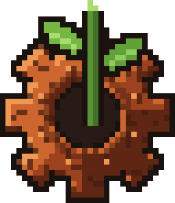

✋ Controles
Móvil: arrastra para mover la cámara, pellizca para el zoom, toca para elegir y mantén pulsado para dar órdenes.
PC: arrastra o usa las flechas, rueda para el zoom, clic para elegir y clic derecho para dar la orden. Espacio, 1, 2 y 3 cambian la velocidad.
🏚 Primeros días
Busca agua y comida, pon camas bajo techo y un almacén. Con ⚒ marcas qué talar, picar o saquear, y con 🏗 pones planos que los colonos construyen solos.
⚔️ Defensa
Los raids crecen con tu riqueza. Levanta muros con puertas, recluta a los colonos con 🎖 cuando lleguen y cura a los heridos en cuanto acabe la pelea.
🔬 Avanzar
Construye un banco de investigación para desbloquear armas, electricidad, torretas, barcos y mucho más. Comercia con las caravanas y vigila la relación con las facciones.
💡 Consejos
Cada colono trabaja según sus prioridades (ficha → Trabajos). En invierno no crece nada al aire libre: guarda comida antes. La partida se guarda sola.
Rustfall: Colony Survival
Un juego de Zenit Studio. Gestión de colonia postapocalíptica en pixel art: cada recurso cuesta y cada colono importa.
Sin anuncios y sin rastreo. La partida se guarda solo en tu dispositivo.
🔒 Política de privacidad · ✉ Contacto
Licencias
Phaser (MIT), Capacitor (MIT), ZzFX (MIT), Native Purchases (MPL-2.0). Gráficos, música y sonidos hechos para el juego.